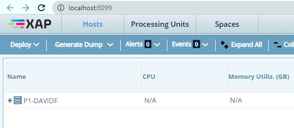
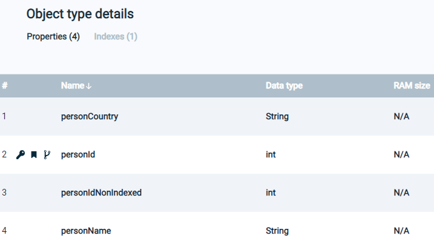

This topic is a hands/on introduction to GigaSpaces SmartCache.
Open a command line in the bin directory of your GigaSpaces installation, and run this command:
gs host run-agent --auto
After a few moments, this will open a browser window:

Change the URL to the following:
http://localhost:8090
The Ops Manager window will open:
Click on Connect to data source, to see the Data Connectivity window:

In order to connect to the Postgres database, proceed as follows.
Select the data source as Postgres:

Enter the connection string for the Postgres database, and the Postgres user/password. , and press

In the Advanced section, remove the limit of the number of records in the Space:
Press Next and the Persons table will display:
Click on Deploy, then choose the Automatic deployment method:

A screen will display indicating that the deployment process is underway:

When the deployment is successful, the following message will appear:

On the side menu, click on the Services tab:

This will display the services that were created as a result of the deployment:
Click on the Spaces tab:

to see the Spaces created by the deployment:

Click on the demo Space to see details of the Space object:

Scroll down the page to see the list of Object types in the space. In this example, there is one Object, the Persons Object. This Object corresponds to the Persons table that we created in Postgres, and appears as follows:

Click on the Persons object:

and detailed information about the Persons object will display:


Click on the SQL Editor tab to see the default the SQL command:

To make it more interesting, modify the command as follows:
SELECT * FROM "com.mycompany.app.model.Persons" order by personId LIMIT 5000
Click on Run Query to see the query results: